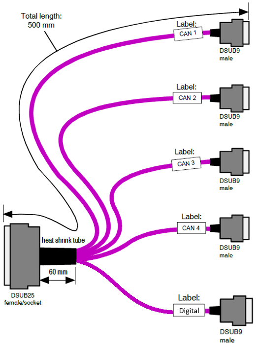

IO603 Pin Mapping
IO603 Pin Mapping — Reference information about the I/O module connector
IO603 Connection Options
There are two connection options for the IO603 I/O module: the 25-pin onboard connector and the 25-pin female D-sub to 5x 9-pin male D-sub cable.
CAN I/O Pin Mapping for the 25-Pin D-Sub Onboard Connector:

| Pin | 25-Pin Male D-Sub Connector |
|---|---|
| 1 | CAN1-low |
| 2 | CAN1-gnd |
| 3 | - |
| 4 | CAN2-high |
| 5 | GPIO 1 |
| 6 | CAN3-low |
| 7 | CAN3-gnd |
| 8 | GPIO 4 |
| 9 | CAN4-high |
| 10 | LIN1 bus line |
| 11 | LIN1-gnd |
| 12 | LIN 2 VCC (8-24 V) |
| 13 | GPIO-gnd |
| 14 | CAN1-high |
| 15 | - |
| 16 | CAN2-low |
| 17 | CAN2-gnd |
| 18 | GPIO 2 |
| 19 | CAN3-high |
| 20 | GPIO 3 |
| 21 | CAN4-low |
| 22 | CAN4-gnd |
| 23 | LIN1 VCC (8-24 V) |
| 24 | LIN2 bus line |
| 25 | LIN2-gnd |
For proper operation, a CAN topology requires electrical termination in the form of resistors.
The IO603 I/O module features software-configurable termination resistors.
CAN I/O Pin Mapping for the 25-Pin Female D-Sub to 5x 9-Pin Male D-Sub Cable:

9-pin D-sub connectors for channels 1 and 2 have the following pin mapping:

| Pin | 9-Pin Male D-Sub Connector |
|---|---|
| 1 | - |
| 2 | CANx-low |
| 3 | CANx-gnd |
| 4 | LINx |
| 5 | LINx GND |
| 6 | - |
| 7 | CANx-high |
| 8 | - |
| 9 | LIN VCC (8-24 V DC) |
9-pin D-sub connectors for channels 3 and 4 have the following pin mapping:
| Pin | 9-Pin Male D-Sub Connector |
|---|---|
| 1 | - |
| 2 | CANx-low |
| 3 | CANx-gnd |
| 4 | - |
| 5 | - |
| 6 | - |
| 7 | CANx-high |
| 8 | - |
| 9 | - |
9-pin D-sub connector for the digital port has the following pin mapping:
| Pin | 9-Pin Male D-Sub Connector |
|---|---|
| 1 | GPIO 1 |
| 2 | GPIO 2 |
| 3 | - |
| 4 | - |
| 5 | - |
| 6 | GPIO-gnd |
| 7 | GPIO 3 |
| 8 | GPIO 4 |
| 9 | - |
For proper operation, a CAN topology requires electrical termination in the form of resistors.
The IO603 I/O module features software configurable termination resistors.